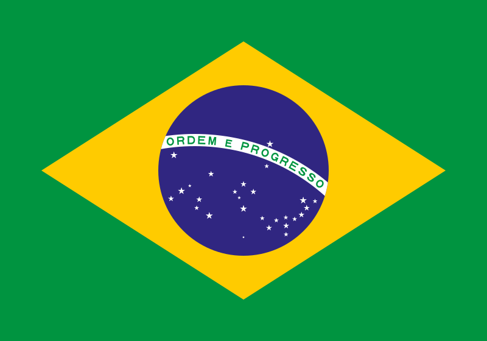

Brasil
 O Brasil, oficialmente República Federativa do Brasil, é o maior país da América do Sul e o quinto maior do mundo, tanto em território quanto em população, com aproximadamente 8,5 milhões de km² e mais de 210 milhões de habitantes. Sua capital é Brasília, localizada no Planalto Central, e as principais cidades incluem São Paulo, Rio de Janeiro, Salvador e Belo Horizonte. O país é conhecido por sua enorme diversidade geográfica, que vai da Amazônia, a maior floresta tropical do mundo, até o Pantanal, os pampas, o Cerrado e as praias extensas do litoral atlântico. O Brasil faz fronteira com praticamente todos os países da América do Sul, exceto Chile e Equador. Sua população é formada por uma rica mistura de povos indígenas, africanos, europeus e asiáticos, refletindo um complexo mosaico cultural e étnico. O Brasil é membro da ONU, Mercosul, G20, BRICS e Organização dos Estados Americanos (OEA), destacando-se globalmente em economia, biodiversidade e cultura popular.
História
A história do Brasil começou com a ocupação de diversos povos indígenas, que habitavam o território há milhares de anos, vivendo da caça, pesca, agricultura e organização social complexa. A chegada dos portugueses em 1500, liderados por Pedro Álvares Cabral, marcou o início da colonização europeia, caracterizada pela exploração do pau-brasil, da cana-de-açúcar e, posteriormente, do ouro e diamantes, além do uso massivo da mão de obra indígena e africana escravizada. Durante três séculos, a colonização moldou a economia, a sociedade e a cultura do país, gerando conflitos, resistência indígena e desenvolvimento de grandes centros urbanos como Salvador, Rio de Janeiro e Ouro Preto.
No século XIX, o Brasil passou por profundas transformações políticas. A família real portuguesa transferiu-se para o Brasil em 1808, fugindo das invasões napoleônicas, o que transformou o território em centro do império lusitano. Em 1822, o país declarou independência, liderado por Dom Pedro I, tornando-se um império independente, posteriormente transformado em república em 1889 após a Proclamação da República. O período republicano foi marcado por industrialização, urbanização, imigração europeia e asiática, bem como por avanços na educação, infraestrutura e integração nacional, embora também enfrentasse desigualdades sociais e políticas. O Brasil viveu ditaduras e crises políticas ao longo do século XX, mas consolidou-se como uma democracia a partir de 1985, com a promulgação da Constituição de 1988.
Cultura
A cultura brasileira é extremamente diversa, resultado da fusão de influências indígenas, africanas, europeias e asiáticas. A música é uma expressão cultural central, com gêneros mundialmente reconhecidos como samba, bossa nova, forró, sertanejo, funk e MPB. O carnaval, celebrado em várias cidades, é um dos maiores eventos culturais do país, refletindo criatividade, tradição e a alegria do povo brasileiro. A literatura brasileira possui autores renomados como Machado de Assis, Jorge Amado, Clarice Lispector e Graciliano Ramos, abordando temas que vão da crítica social à valorização da identidade nacional.
A gastronomia do Brasil é regionalmente diversa, com pratos típicos como feijoada, acarajé, pão de queijo, churrasco gaúcho, moqueca e tapioca. A língua oficial é o português, sendo a única na América do Sul, embora haja línguas indígenas preservadas em várias regiões. A arquitetura combina estilos coloniais portugueses, neoclássicos, art déco e modernos, como as obras de Oscar Niemeyer em Brasília. Festividades religiosas e populares, tradições folclóricas e manifestações artísticas refletem a riqueza cultural do país e a convivência de diferentes identidades culturais em um mesmo território.


Clima
O Brasil apresenta uma ampla variedade climática devido à sua extensa área territorial, que inclui a região amazônica, o Pantanal, os Pampas, o Cerrado e o litoral atlântico. No norte, predomina o clima equatorial, quente e úmido, com chuvas abundantes durante o ano. No centro-oeste, o clima é tropical, com estações bem definidas de seca e chuva. O sudeste apresenta clima tropical de altitude e clima subtropical em áreas mais altas. Já o sul do país tem clima subtropical, com verões quentes e invernos frios e úmidos. Essa diversidade climática influencia a agricultura, a fauna, a flora e os modos de vida das populações regionais, além de favorecer uma biodiversidade única e rica.
Biodiversidade
O Brasil possui uma das maiores biodiversidades do planeta, abrigando a Amazônia, a Mata Atlântica, o Cerrado, o Pantanal, a Caatinga e os Pampas, cada bioma com flora e fauna específicas. O país é lar de milhares de espécies de aves, mamíferos, répteis, peixes e plantas, incluindo muitas endêmicas. Parques nacionais e reservas, como o Parque Nacional do Iguaçu, Pantanal Matogrossense e Parque Nacional da Serra da Canastra, são fundamentais para a preservação desses ecossistemas, promovendo pesquisa científica, turismo sustentável e educação ambiental.
Apesar de sua riqueza natural, a biodiversidade brasileira enfrenta ameaças significativas, como desmatamento, queimadas, mineração ilegal e expansão urbana. A conservação ambiental é crucial para manter o equilíbrio ecológico, proteger recursos hídricos e garantir a sustentabilidade para as futuras gerações, além de manter o Brasil como referência global em biodiversidade e conservação.


Cidades
As cidades brasileiras refletem a diversidade cultural, histórica e geográfica do país. São Paulo, a maior cidade do país, é o principal centro econômico, financeiro e cultural da América Latina, com forte influência industrial e comercial. Rio de Janeiro, famosa mundialmente por suas praias, montanhas e eventos culturais, é um centro turístico e artístico de grande relevância. Brasília, projetada por Lúcio Costa e Oscar Niemeyer, é a capital federal e um marco da arquitetura moderna, sediando os poderes executivo, legislativo e judiciário.
Outras cidades importantes incluem Salvador, conhecida por sua herança afro-brasileira e festas religiosas; Belo Horizonte, polo cultural e industrial; Porto Alegre, centro econômico e cultural do sul; e Manaus, porta de entrada para a Amazônia. As cidades brasileiras desempenham papel crucial na economia, educação, cultura e serviços, conectando diferentes regiões e fortalecendo a identidade nacional, sendo polos de inovação, turismo e diversidade cultural.